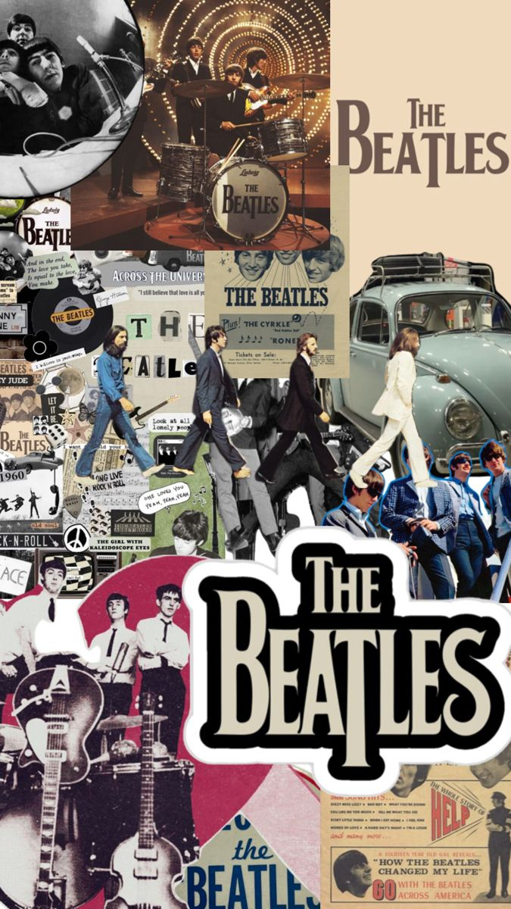
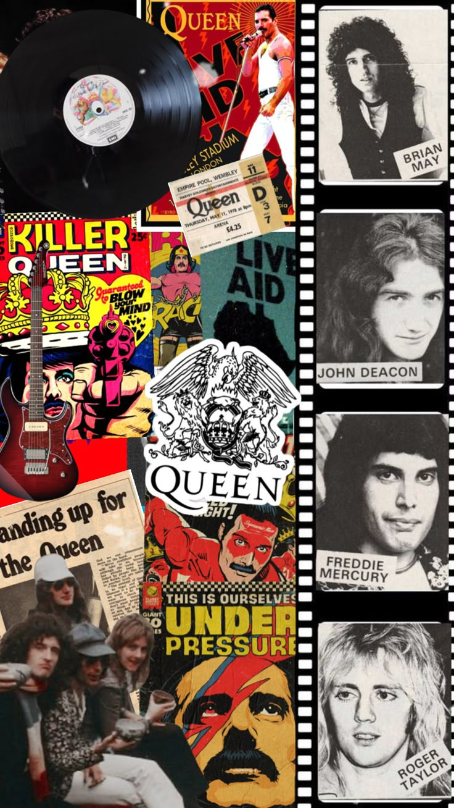

Fast forward to the 1970s, punk rock was known as the sound of rebellion due to their lyrics that covered social issues of the time. Punk rock wasn't just about the music, it was a movement that challenged the status quo and gave a voice to the unprivileged. The DIY ethos of punk rock influenced everything from fashion to politics. The safety pins, ripped jeans, and provocative lyrics were more than just aesthetics; they were a statement. Punk rock showed that anyone could pick up an instrument and make music, breaking down the barriers between artist and audience.

The Beatles were one the most iconic and influential bands in the history of popular music. They have created timeless hits like “Hey Jude”, “Let It Be” and “Here comes the sun”. Their music became popular along with the cultural revolution of the 1960s which brought with it new attitude and style, paving the way to modern pop music.

Queen, one of the most iconic rock bands in history, was formed in 1970. However, they became known in the late 70s. The band's greatest hits are “Bohemian Rhapsody”, “We are the Champions” and “Somebody to love”. They didn't play a single genre, but many, their music includes various genres and musical elements of rock, opera, glam rock, heavy metal and disco.

In the 1990s, a new fresh sound known as Britpop, a genre that combined the energy of punk with the melodic sensibilities of the 60s became famous among the youth. Also, the rivalry between the most popular bands who wereOasisandBlur, added excitement and drama to the public's imagination, it was a cultural battle between the North and the South of England.
In the 2000s, with the new century, new bands emerged, that is the case of a well known band that is still successful nowadays, Coldplay . They are authors of hits like “yellow”, “viva la vida”, “Fix you”, and many others. They're known for adapting to changes through the years and creating a deep connection with fans. In addition to their music, they tend to elaborate visually stunning live performances when going on tour.
Moving forward to the 2010s, new artists like Adele and Ed Sheeran have warmed people's hearts with their sweet voices. On one hand, Adele rose to fame in 2008 with her debut album. Since then, she has become one of the most successful artists of her generation. Her doubtful voice and heartfelt lyrics have resonated with fans around the world. On the other hand, Ed Sheeran has become a phenomenon that blends folk, pop and hip-hop. His music has resonated with audiences of all ages and backgrounds, making him one the most successful artists of the modern era.
During the 2010s, British pop music was on a rise, the band One Direction originated in 2010 in the TV program the X Factor UK. It was composed by Harry Styles, Liam Payne, Louis Tomlinson, Niall Horan and Zayn Malik. Since then, they have taken world music by storm. Even though nowadays they are in hiatus as a band, and following their solo careers aside, we couldn't help but mention the unbelievable success that they had. Despite the band having gone on an indefinite hiatus, they continue to be successful in their solo careers and millions of people all over the world can agree that One Direction have managed to shape them into the person that they are today, simply the way or heir and the contagious, encouraging personalities. One direction's impact on pop music cannot be overstated.
In the 2020s, after the pandemic, many artists use different social media like Tiktok or Instagram to promote their music, among them are Dua Lipa and Charli XCX, while other bands such as the Arctic Monkeys, The Neighbourhood and The 1975 are still in demand for their unique style.
The evolution of British music has spanned decades and left an indelible mark on the global music scene. From the Beatles' revolution in the 1960s, to the punk rock rebellion of the late 1970s, to the Britpop explosion of the 1990s, to the electronic music dominance of the 2010s, British musicians have consistently pushed boundaries, innovated and made a lasting impact on music history.
The ability of British musicians to continually reinvent themselves and redefine genres has cemented their place as true pioneers in the industry.